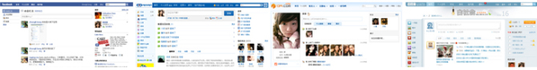
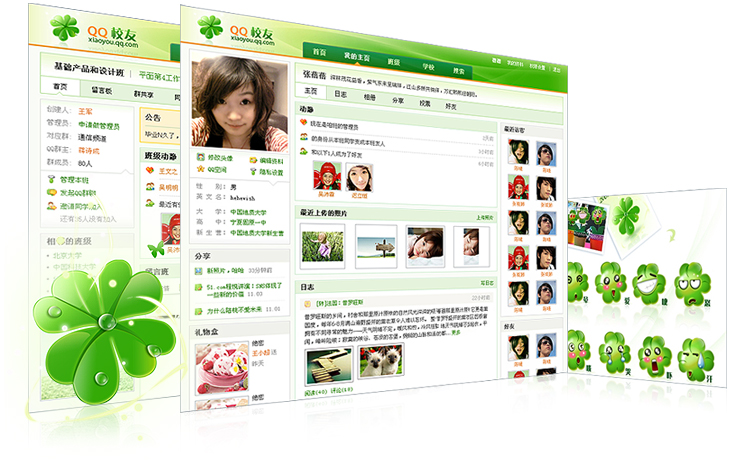
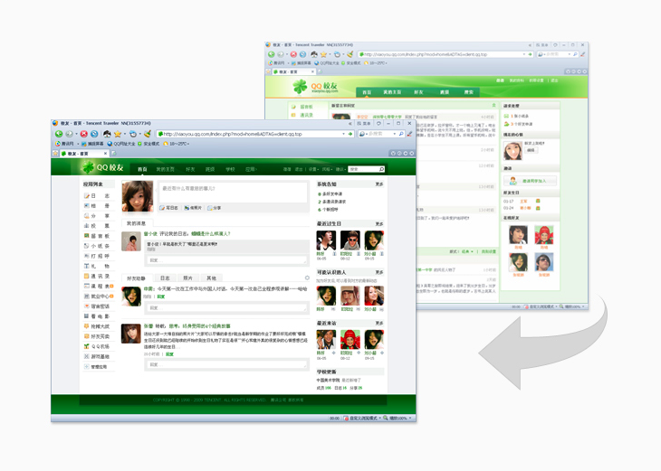
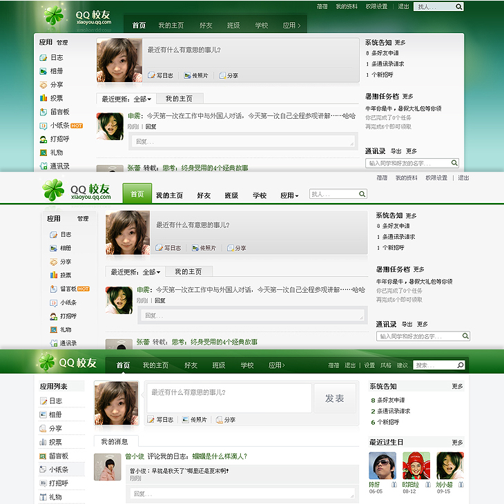
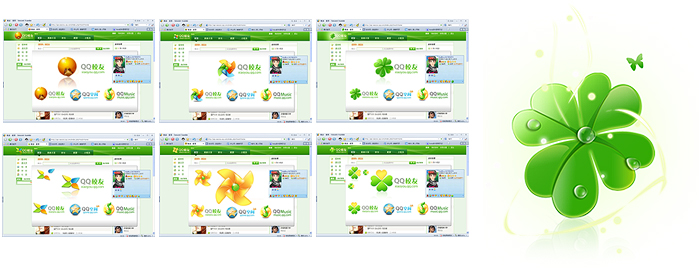
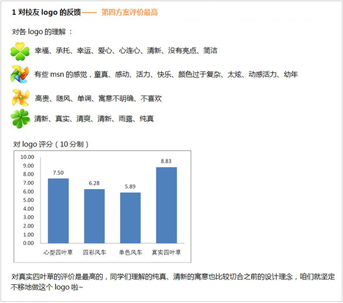
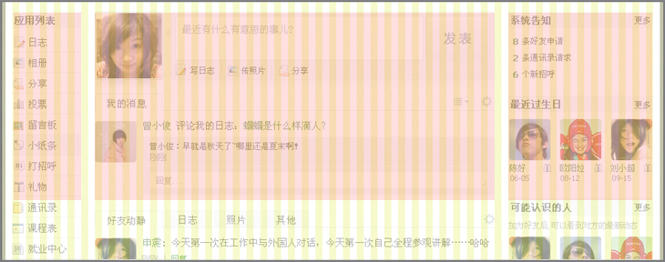
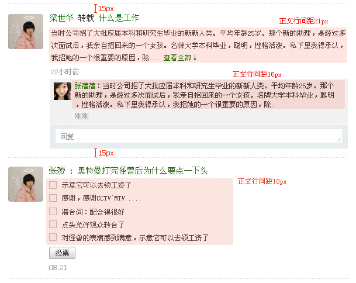
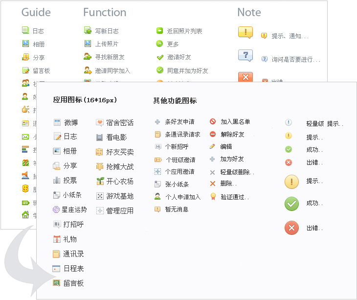
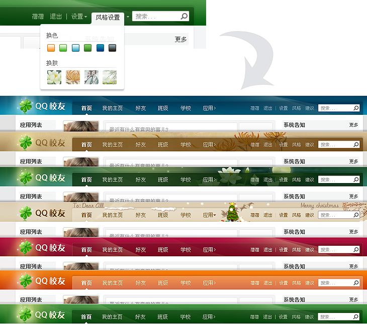

QQ校友sns视觉设计分享
时常和sns相关工作的同事们一起讨论社区类网站的风格设定，logo的设计，排版等等问题，这里就工作中的实践经验和大家做分享，还有很多不足之处期望和大家共同努力。 http://cdc.tencent.com/wp-content/uploads/2010/03/1003-beibei-sns-design-02.jpg http://cdc.tencent.com/wp-content/uploads/2010/03/1003-beibei-sns-design-01.jpg http://cdc.tencent.com/wp-content/uploads/2010/03/1003-beibei-sns-design-03.png http://cdc.tencent.com/wp-content/uploads/2010/03/1003-beibei-sns-design-04.jpg http://cdc.tencent.com/wp-content/uploads/2010/03/1003-beibei-sns-design-05.jpg http://cdc.tencent.com/wp-content/uploads/2010/03/1003-beibei-sns-design-06.jpg http://cdc.tencent.com/wp-content/uploads/2010/03/1003-beibei-sns-design-07.jpg http://cdc.tencent.com/wp-content/uploads/2010/03/1003-beibei-sns-design-08.jpg http://cdc.tencent.com/wp-content/uploads/2010/03/1003-beibei-sns-design-09.jpg http://cdc.tencent.com/wp-content/uploads/2010/03/1003-beibei-sns-design-10.jpg
关于视觉风格定位：
当时市面上已经有着一大批以不同明度，纯度的蓝色为主色调的sns产品

所以要让用户在众多同类产品一眼中认出来，必须给你的产品创造产异化，又根据校友的用户定位我们为校友选择了绿色作为主色调。
青葱岁月、绿色给人轻松、积极、清新的感觉，而且又和同类产品造成了视觉上较高的识别性。
下图是对外发布的第一版的QQ 校友

校友至上线以来经过无数次小的迭代，下面是去年一次较大的改版：

改版中的过程稿：

关于logo设计：
之前我们也给出了多个方案以及适用环境的效果比照。大家会倾向于选择写实四叶草的方案。

在产品推出公测前，我们对logo作了一次用户调查，得到了一个比较满意的反馈。下面是用研的方法和报告：
方法：以用户访谈的形式给20名在校大三以上的本科生和研究生看logo的设计稿件（包括环境使用效果图）请各自说出自己对各方案logo的理解并给出自己的评分（10分制）

关于构架布局：
这类网站的信息量很大、在整体界面的搭建上要简洁便于信息的阅读。因此网站栅格的搭建和信息的编排布局很重要。

关于文字编排：
由于大量的信息内容，文字的排版很重要，这里举出一些编排上的细节给予参考（以feed为例）。

注意：这类网站会有很多的子级页面所以在模块的分栏等细节设计上要考虑周全便于全站的统一。
关于icon：
这类社区网站使用到icon的地方会比较多，但这类图标起的是一定范围内适度上的提醒，而不会过度打扰到用户。
因此这期间我们对icon做了次较大的优化，优化方向在颜色上更柔，造型上更平稳方正。

关于其他设计：
常常讲到这类网站的设计约束性，但设计师更要为产品挖掘亮点，为产品加分。

以上仅是个人的实践和经验总结，欢迎大家指出不足之处并提供更多宝贵建议。
希望这些分享对大家做sns方面的设计能有所帮助。
转自：http://cdc.tencent.com/?p=2400